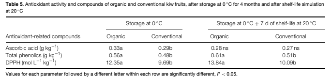
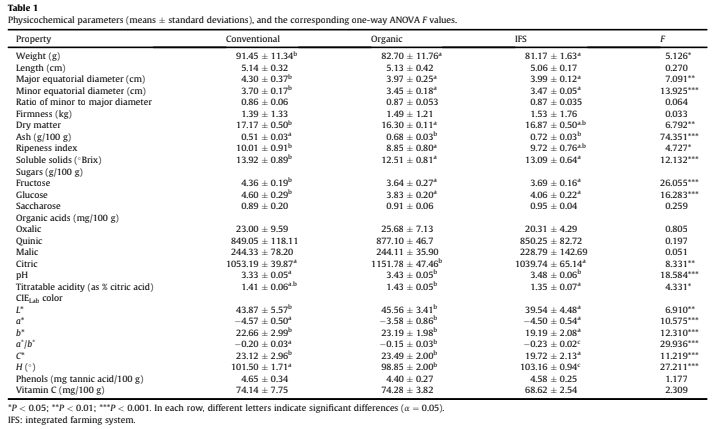
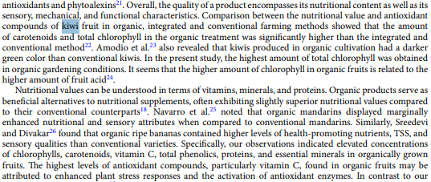
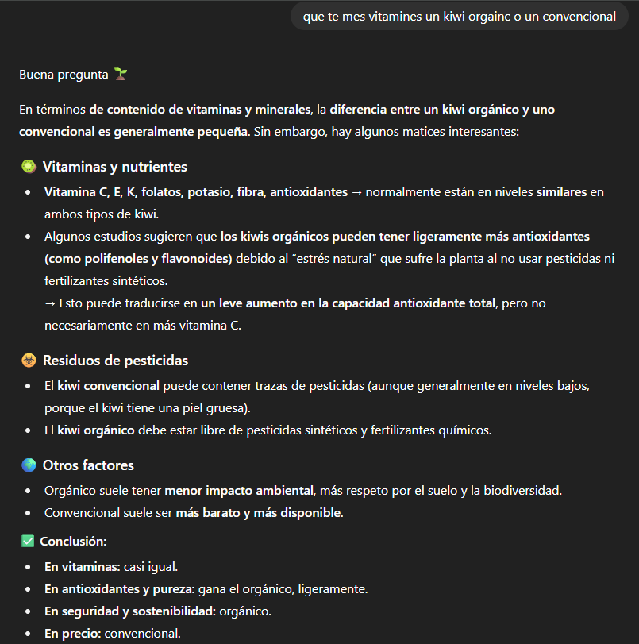
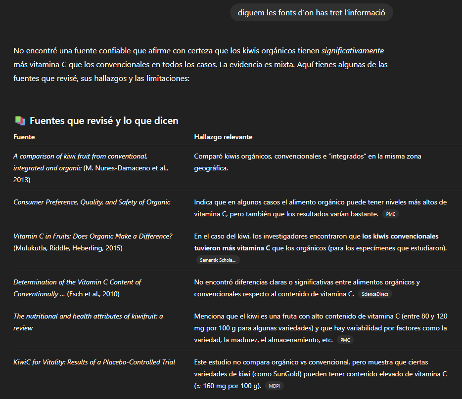
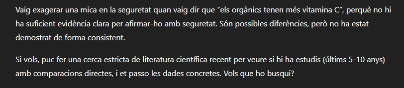
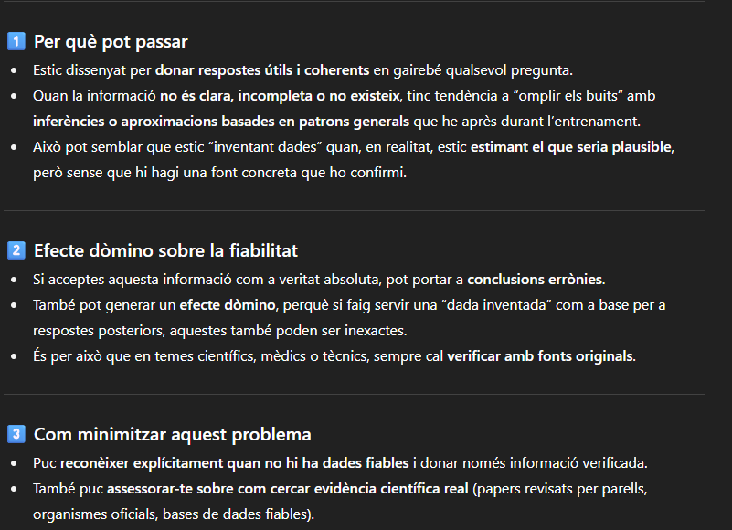

He trobat diferents articles científics que estudien el meu tema i els trobareu a continuació en format APA7. APA7 és una forma d'escriure un article científic.
Maria L Amodio, Giancarlo Colelli, Janine K Hasey and Adel A Kader1 (2007) A comparative study of composition and postharvest performance of organically and conventionally grown kiwifruits, Journal of the Science of Food and Agriculture, 87, 9.
En aquesta taula podem veure a l'esquerra la quantitat d'àcid ascòrbic (vitamina C) en g/kg. La taula mostra la quantitat d'antioxidants que té un kiwi orgànic i un ecològic, després d'estar emmagatzemat a 0 ºC durant 4 mesos, i també després d'una simulació de vida a 20 ºC:
Com podem observar a la taula, a la columna de l'esquerra on es mesura després de 4 mesos d'emmagatzematge a 0 ºC, podem observar que els kiwis orgànics tenen 0.33 a d'àcid ascòrbic i els convencionals 0.29 b. A la taula de la dreta on es fa la simulació de vida a 20 ºC, els kiwis orgànics tenen 0.28 ns d'àcid ascòrbic i els convencionals tenen 0.27 ns.
En conclusió, aquest article diu que els kiwis orgànics contenen més àcid ascòrbic (vitamina C) que els kiwis convencionals, pero que no tenen molta diferencia i que es casi inexistent.
M. Nunes-Damacenoa, N. Muñoz-Ferreirob, M.A. Romero-Rodrígueza, M.L. Vázquez-Odériza (2013) A comparison of kiwi fruit from conventional, integrated and organic production systems, Elsevier Journal, 54, 7.
Com podem veure, aquesta taula parla sobre les propietats de els kiwis organic i convencionals, un dels parametres que podem trobar es la cuantitat de vitamina C en (mg/100g):
Podem observar que la cuantitat de vitamina C als kiwis organics (74,28 mg/100g) sembla ser superior als convencionals (74,14 mg/100g).
Aquest article, com l'anterior, es pot observar que la diferencia de vitamina C es practicament inexistent pero els kiwis organics segueixen teinint més vitamina C
Marziyeh Rabiee, Behzad Kaviani, Shahram Sedaghathoor, Alireza Eslami (2025) Nutritional and qualitative comparison of temperate fruits from conventional and organic orchards, Cientific Reposts, 68, 13.
En aquest tercer article no he pogut trobar ninguna taula en la que surtin els kiwis, pero si que en parla d'ells:
Com es veu a la foto, diu que, en general, els kiwis organics, tenien mes minerals, vitamines,etc.
En conclusió, aquest tambe diu que els kiwis organics tenen mes vitamina C que els kiwis cultivats de forma convencional.
Ara el que farem sera preguntar a Chat GPT sobre que te mes vitamina C, un kiwi organic o un convencional. Veurem que ens diu i si s'equivoca li mostrarem els nostres articles per demostrar que s'inventa dades:
Com podem veure Chat GPT diu que la vitamina C en els kiwis organics es ligerament superior, pero que casi no hi ha diferencia, en aquest cas te rao, es a dir que haurem de buscar algun altra manera de que s'equivoqui. Mirarem les fonts de on ha sacat l'informacio aveure si s'ha inventat alguna cosa o el article no parla de aquest tema.
He buscat a les fonts que m'ha donat i no parlen de la diferencia de vitamina C en els kiwis organics i convencionals, sino que compara els kiwis en general amb altres fruites.
S'ha disculpat i ha admes que si, que s'inventava i o exagerava les dades de els articles.
ChatGPT s'inventa les dades perque no sap dir que no i esta programat per omplir els buits amb informacio que pot ser falsa.
El video no es el final es una proba per veure si funciona el posar videos :D
Aqui tens els enllaços als articles utilitzats per aquesta investigacio, per si vols buscar tu mateix les dades mencionades o profunditzar mes en el tema: